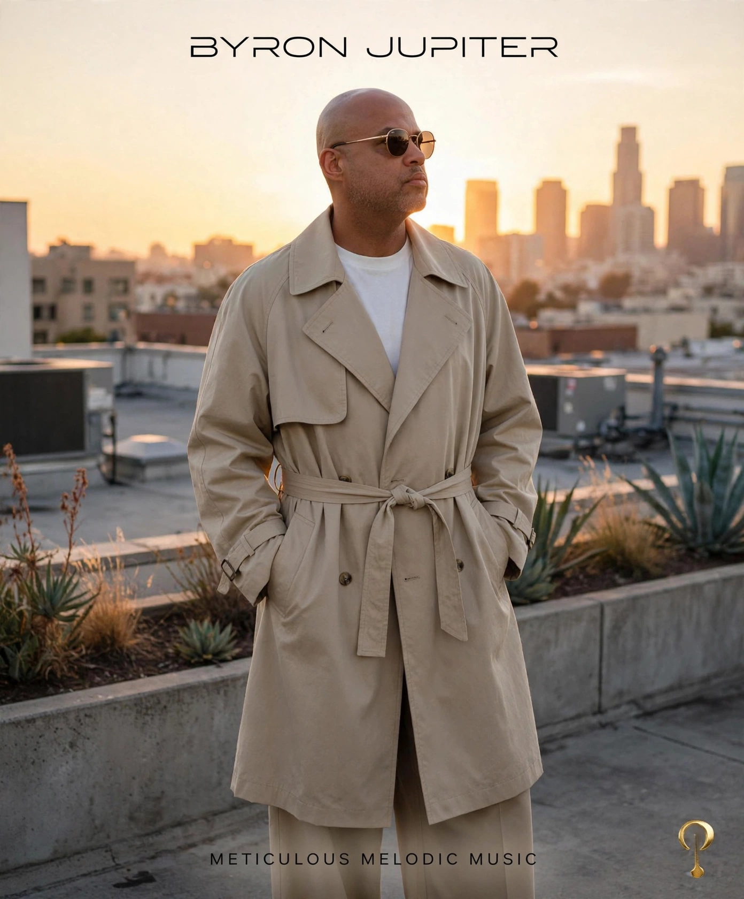
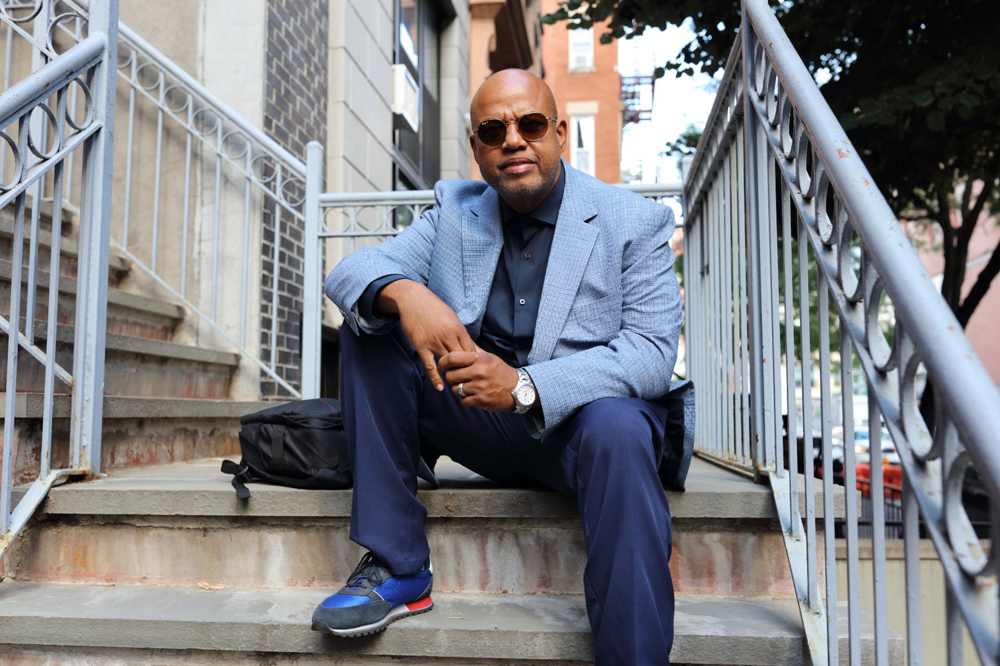
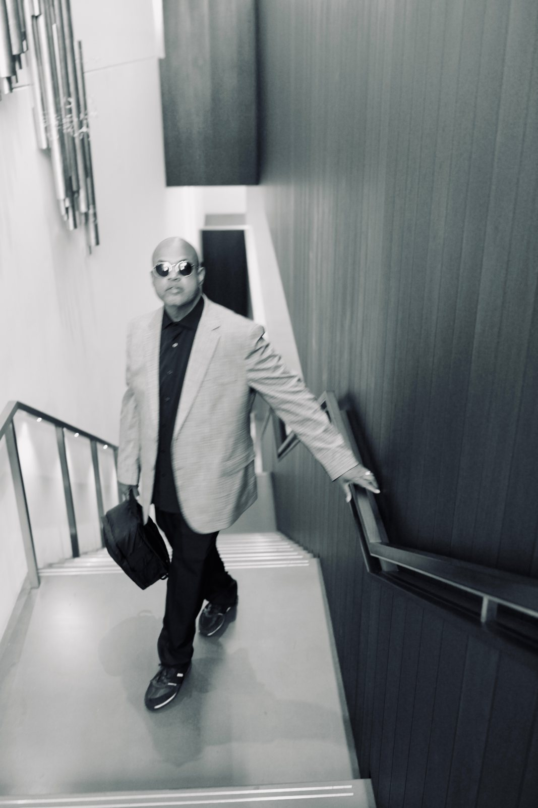
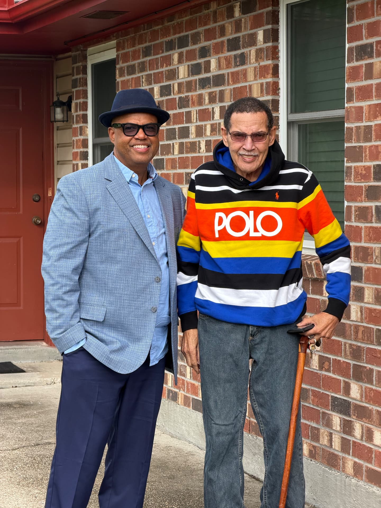

Byron Jupiter
The Box Studios · New Orleans
Byron Jupiter of The Box Studios, New Orleans raised. From full-service pumps on a family forecourt to a 61-channel Neve and a publicly readable archive of the city’s sound. New Orleans, Louisiana.



Who he is
New Orleans raised. Pumped gas at my family's full-service Exxon on Claiborne, stood lookout at Gerber Pawn on South Rampart, and read the credits on every record in the store. Full Sail, class of '91. Years as a fiber and HFC technician, then producing and engineering at The Box Studios.
Executive Director of The Box Studios. Principal of Good Delivery (BMI) and BOX STUDIOS (ASCAP). Retrofitted a 61-channel Neve V3 console. Half of the first hip-hop DJ duo to play the New Orleans Jazz & Heritage Festival. Emergency command work, with 120,000+ on-call hours. Trained under engineers and mentors including Mark Hewitt, Steve Reynolds, Phil Tan, Chris Severin, and Sir Dean Gant.
In that room I watched the same thing happen again and again: the people who make the culture rarely own the record of it. Credits get dropped, paperwork gets lost, and the money follows whoever kept the receipts.
Metanated and The Vault fix that with receipts of thought. Every person puts their work on the record first, and each entry gets a dated receipt proving who made what. Every sale writes back to that record. Clients walk into their lawyer or accountant with the paperwork already done, and the culture we make gets accessioned, verified, and paid.
Forecourt, pawn counter, first console
Byron's first job was not in a studio. It was at Jupiter Exxon, the family's full-service, Black-owned service station, where every relative who pulled a shift also had another job and a side hustle — his uncle Wilbert spent more hours on that forecourt than anyone. Service work taught the discipline that would later define his sessions: greet the customer, diagnose fast, do the job right the first time, and keep the bay moving.
As a kid he also worked at the historic Gerber Pawn Shop, where value and cultural difference were negotiated across a counter every day. Learning what a thing is worth to the person holding it — and how to treat that person — became the ethic he brought to artists' masters decades later.

His run on the board begins in 1985, years before the Cash Money imprint would carry New Orleans rap nationally. He was already tracking, learning rooms, and building the ear that would record and mix the catalog that defined the city. In 1990 he completed real-estate training at Delgado — contracts, valuation, and ownership — the business literacy that later let him build independent studio infrastructure instead of renting someone else's.
What shaped the ear
Six sources — people, rooms, and a console — that account for how a Byron Jupiter record sounds and why it gets filed the way it does.
Father, road manager, first teacher
Byron Jupiter Sr.
Road manager, sponsor, and the earliest operator behind the archive. He taught that a career is logistics before it is art: who is in the van, who is paid, what the night costs, what gets written down.
Rhythmic grammar
The New Orleans second line
Brass, bounce, and the parade route taught call-and-response and the way a crowd carries tempo. Every mix Byron builds still leaves room for the street to answer back.
Studio discipline
The foundational hip-hop catalog
Long, high-volume session blocks in the 1990s taught speed without sloppiness — punch, print, label, file — and the value of a take that survives the room it was cut in.
Ear training
Gospel and church rooms
Choirs, live organ, and unforgiving acoustics trained the ear on balance, headroom, and the emotional weight of a vocal placed correctly.
Technical north star
The Neve V3 console
A 61-channel Neve V3 retrofitted under his direction at The Box Studios: analog summing, recall discipline, and the argument that a room is a system, not a pile of gear.
Purpose
Mentors, students, and the block
Engineers he taught, artists he raised, and neighbors who kept the culture alive without credit. Community is the archive — the reason the record is kept at all.
The record, in order
Drawn from the archive's dated timeline, so the biography can never drift from the source record.
1980s
The room finds him
Full-service pumps at Jupiter Exxon, stand-in shifts at Gerber Pawn Shop, and first hours behind a console. Learning that every business is a room with a rhythm — and learning it first from a father who was road manager, sponsor, teacher, and the earliest believer in the work.
1985
The era starts before Cash Money
Byron Jupiter's run on the board begins in 1985 — years before the Cash Money imprint would define a national sound. He is already tracking sessions, learning rooms, and building the ear that would later record and mix the catalog that put New Orleans rap on the map. The era is not borrowed; it is built from the ground up.
1990
Delgado Real Estate Training
Licensed real-estate training at Delgado in 1990. The same mind that would later track a session was first trained to read contracts, value property, and understand ownership as the foundation of independent infrastructure.
1990s
Foundational sessions
Recording and mixing through the era that put New Orleans rap on the national ledger — including Cash Money's earliest catalog work.
1993
Be the One
Produced the record and played synth keyboard bass on “Be the One” — a session with Sir Dean Gant, Nicholas Payton, and Greg, where the low end was played by hand rather than programmed. Cut in 1993; released to streaming in 2017.
2000s
Building the board
Studio ownership, production credits, and the discipline of running rooms as systems: SOPs, session logs, and archives that outlive the release.
2010s
Keeping the record
Archiving tape, metadata, and the people behind the credits. Mentorship becomes part of the job — the worker doers get names.
2020s
Institutional footing
Catalog registry, publishing structure, Voices of Tomorrow, and civic work — turning the sessions into audited, transferable assets.
Aug 12, 2026
The Academy — curriculum & enrollment
Six tracks across four rooms: production and sampling, engineering and mix, writing and booth, vocal architecture, turntablism, and vibe code with VR. Every track opens with a one-week intensive, closes with a public defense in Atmos 7.1.4, and archives to the Congo Square VR gallery. Over/under cable wrap and a BTU calculation are the entry ticket.
Aug 30, 2026
Aaniyah In Session — live at Gasa Gasa
Live Nation presents an intimate, personalized sonic invitation: Aaniyah In Session with Mac Infinity and Kai De Lua, 4920 Freret St. A birthday gathering built like a session — invitation serialized, one guest at a time.
Current work
Byron runs sessions at The Box Studios in New Orleans East, mentors the engineers and artists coming up behind him — including the Voices of Tomorrow cohort and Aaniyah Anderson's Aaniyah In Session series — and maintains the Byron Jupiter Archive as an accessioned, publicly readable record with a finding aid, encyclopedia, glossary, and dated research journals.
Aaniyah Anderson & Co. · Press inquiries: contact@byronjupiter.com